FR - ENG - Khmer Learning
Every version of this page since 16 Nov 2026, newest first: what changed, and the captures and videos as the page showed them at the time.
Chaque version de cette page depuis le 16 nov. 2026, de la plus récente à la plus ancienne : ce qui a changé, et les captures et vidéos telles que la page les montrait à l’époque.
គ្រប់កំណែនៃទំព័រនេះ តាំងពីថ្ងៃទី 16 វិច្ឆិកា 2026 ពីថ្មីបំផុតទៅចាស់៖ អ្វីដែលបានផ្លាស់ប្តូរ និងរូបថតអេក្រង់ និងវីដេអូ ដូចដែលទំព័របានបង្ហាញនៅពេលនោះ។
Nothing on this page has been regenerated: every capture and video is the file the site published at the time, recovered from its Git history. What the site never published is not here. Since 21 November 2026, every change to the project page adds a version here, and the captures, videos and Last changes it replaces are kept.Rien sur cette page n’a été régénéré : chaque capture et chaque vidéo est le fichier que le site publiait à l’époque, retrouvé dans son historique Git. Ce que le site n’a jamais publié n’y figure pas. Depuis le 21 novembre 2026, chaque changement de la page du projet ajoute ici une version, et les captures, vidéos et derniers changements qu’il remplace sont conservés.គ្មានអ្វីនៅលើទំព័រនេះត្រូវបានបង្កើតឡើងវិញទេ៖ រូបថតអេក្រង់ និងវីដេអូនីមួយៗ គឺជាឯកសារដែលគេហទំព័របានផ្សាយនៅពេលនោះ ដែលបានយកមកវិញពីប្រវត្តិ Git របស់វា។ អ្វីដែលគេហទំព័រមិនដែលផ្សាយ មិនមាននៅទីនេះទេ។ តាំងពីថ្ងៃទី 21 ខែវិច្ឆិកា ឆ្នាំ 2026 ការផ្លាស់ប្តូរនីមួយៗនៃទំព័រគម្រោង បន្ថែមកំណែមួយនៅទីនេះ ហើយរូបថតអេក្រង់ វីដេអូ និងការផ្លាស់ប្តូរចុងក្រោយ ដែលវាជំនួស ត្រូវបានរក្សាទុក។
From the latest to the first.De la plus récente à la première.ពីកំណែចុងក្រោយ ដល់កំណែដំបូង។
-
Last changesDerniers changementsការផ្លាស់ប្តូរចុងក្រោយ
The page now ends with a summary of the repository’s latest commits, in English, French and Khmer.
La page se termine désormais par un résumé des derniers commits du dépôt, en anglais, en français et en khmer.
ឥឡូវនេះ ទំព័របញ្ចប់ដោយសេចក្តីសង្ខេបនៃ commit ចុងក្រោយរបស់ repository ជាភាសាអង់គ្លេស បារាំង និងខ្មែរ។
-
Seven languagesSept languesប្រាំពីរភាសា
Seven languages and the language selector, FR / ENG / KH profiles, 60 lessons and 9,668 MP3 clips; the screenshots are retaken.
Sept langues et le sélecteur de langue, les profils FR / ENG / KH, 60 leçons et 9 668 extraits MP3 ; les captures sont refaites.
ប្រាំពីរភាសា និងកម្មវិធីជ្រើសរើសភាសា ប្រវត្តិរូប FR / ENG / KH មេរៀន 60 និងឯកសារសំឡេង MP3 9 668។ រូបថតអេក្រង់ត្រូវបានថតឡើងវិញ។
13 captures13 capturesរូបថតអេក្រង់ 13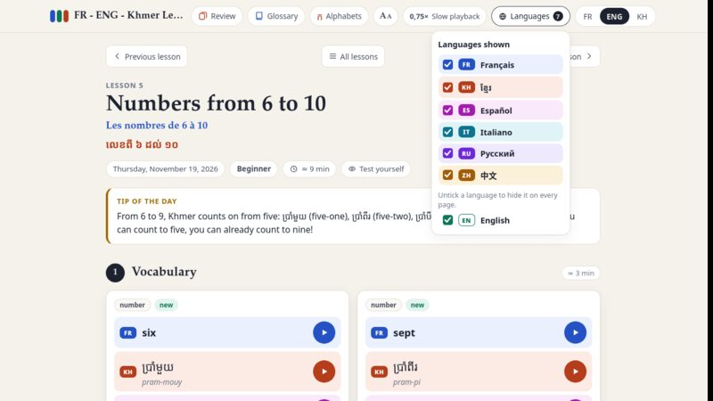
On the pageSur la pageនៅលើទំព័រ 
On the pageSur la pageនៅលើទំព័រ 
On the pageSur la pageនៅលើទំព័រ 
On the pageSur la pageនៅលើទំព័រ On the pageSur la pageនៅលើទំព័រ 
On the pageSur la pageនៅលើទំព័រ 
On the pageSur la pageនៅលើទំព័រ 
On the pageSur la pageនៅលើទំព័រ 
On the pageSur la pageនៅលើទំព័រ 
On the pageSur la pageនៅលើទំព័រ 
On the pageSur la pageនៅលើទំព័រ 
On the pageSur la pageនៅលើទំព័រ 
On the pageSur la pageនៅលើទំព័រ -
Its own pageSa propre pageទំព័រផ្ទាល់ខ្លួន
The daily French, English and Khmer course gets its page: a lesson of under ten minutes a day for a French-Khmer couple, the five parts of a lesson, every line spoken, role play, flashcards, the two alphabets, offline on the phone, and eleven screenshots of the site.
Le cours quotidien de français, d’anglais et de khmer reçoit sa page : une leçon de moins de dix minutes par jour pour un couple franco-khmer, les cinq parties d’une leçon, chaque phrase prononcée, jeux de rôle, cartes mémoire, les deux alphabets, hors ligne sur le téléphone, et onze captures du site.
វគ្គសិក្សាប្រចាំថ្ងៃ ភាសាបារាំង អង់គ្លេស និងខ្មែរ ទទួលបានទំព័ររបស់ខ្លួន៖ មេរៀនតិចជាងដប់នាទីក្នុងមួយថ្ងៃ សម្រាប់គូស្វាមីភរិយាបារាំង-ខ្មែរ ផ្នែកប្រាំនៃមេរៀន គ្រប់ឃ្លាត្រូវបានអានឮ ការសម្តែងតួនាទី ប័ណ្ណចងចាំ អក្ខរក្រមទាំងពីរ ប្រើបានដោយគ្មានអ៊ីនធឺណិតលើទូរស័ព្ទ និងរូបថតអេក្រង់ដប់មួយនៃគេហទំព័រ។
12 captures12 capturesរូបថតអេក្រង់ 12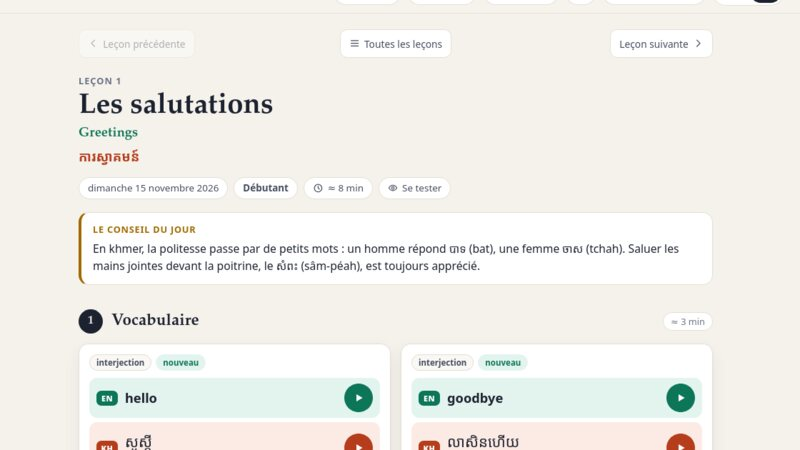
Replaced on 19 Nov 2026Remplacée le 19 nov. 2026ត្រូវបានជំនួស 19 វិច្ឆិកា 2026 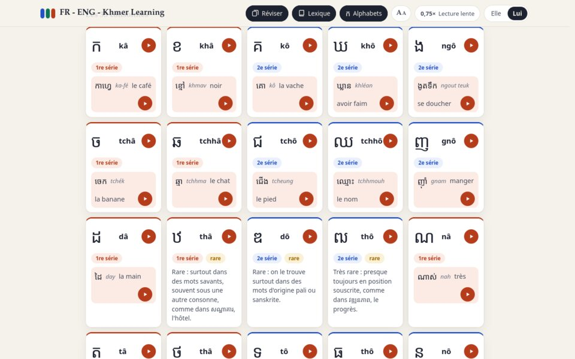
Replaced on 19 Nov 2026Remplacée le 19 nov. 2026ត្រូវបានជំនួស 19 វិច្ឆិកា 2026 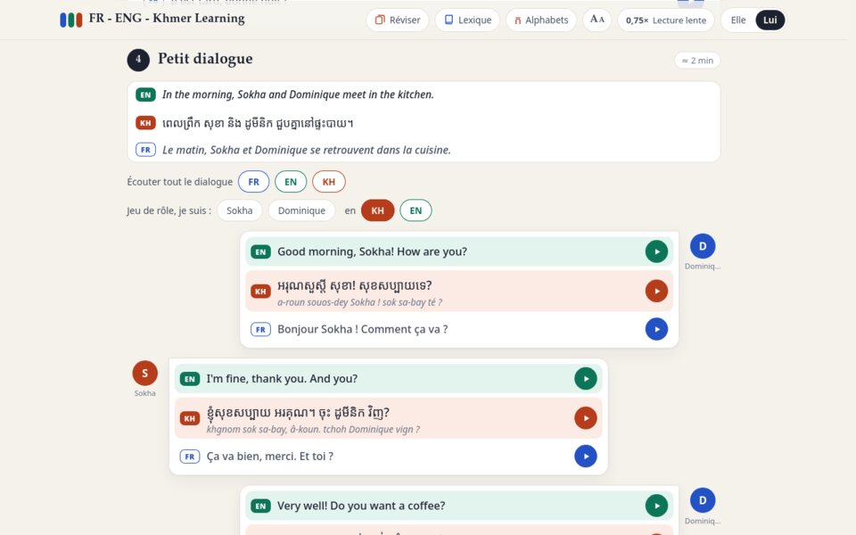
Replaced on 19 Nov 2026Remplacée le 19 nov. 2026ត្រូវបានជំនួស 19 វិច្ឆិកា 2026 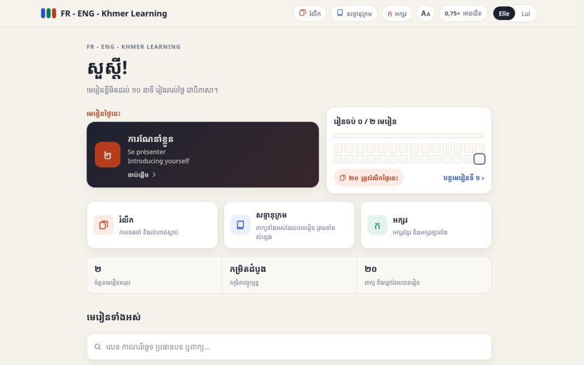
Replaced on 19 Nov 2026Remplacée le 19 nov. 2026ត្រូវបានជំនួស 19 វិច្ឆិកា 2026 
Removed on 19 Nov 2026Retirée le 19 nov. 2026ត្រូវបានដកចេញ 19 វិច្ឆិកា 2026 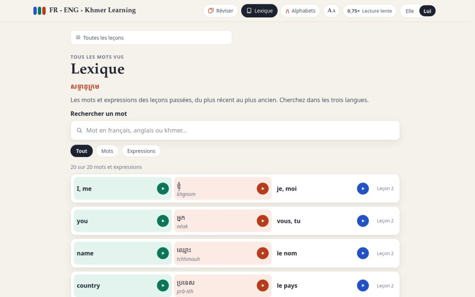
Replaced on 19 Nov 2026Remplacée le 19 nov. 2026ត្រូវបានជំនួស 19 វិច្ឆិកា 2026 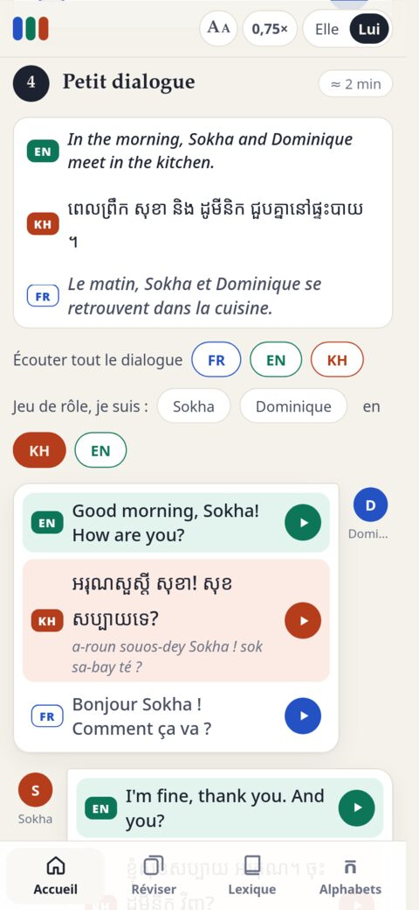
Replaced on 19 Nov 2026Remplacée le 19 nov. 2026ត្រូវបានជំនួស 19 វិច្ឆិកា 2026 
Replaced on 19 Nov 2026Remplacée le 19 nov. 2026ត្រូវបានជំនួស 19 វិច្ឆិកា 2026 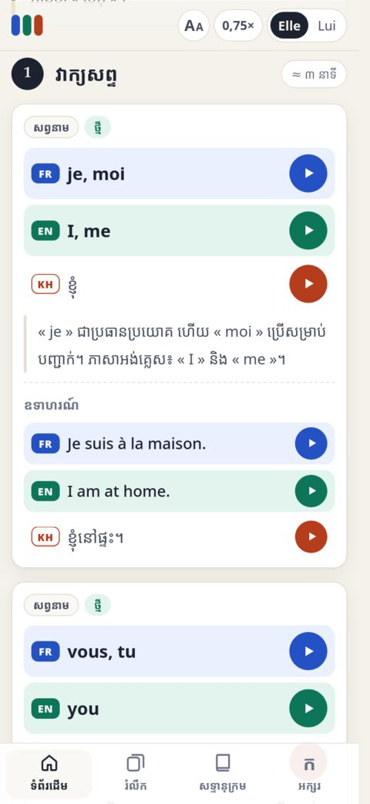
Replaced on 19 Nov 2026Remplacée le 19 nov. 2026ត្រូវបានជំនួស 19 វិច្ឆិកា 2026 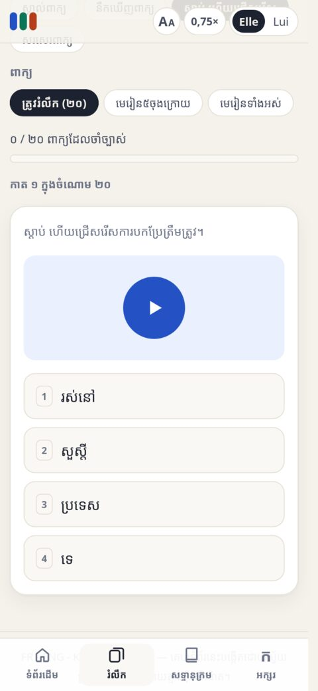
Replaced on 19 Nov 2026Remplacée le 19 nov. 2026ត្រូវបានជំនួស 19 វិច្ឆិកា 2026 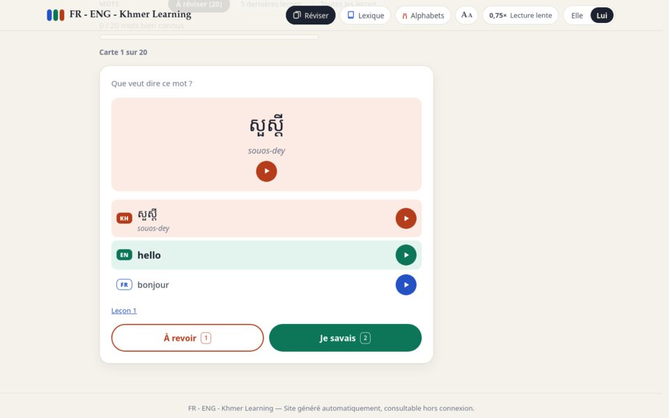
Replaced on 19 Nov 2026Remplacée le 19 nov. 2026ត្រូវបានជំនួស 19 វិច្ឆិកា 2026 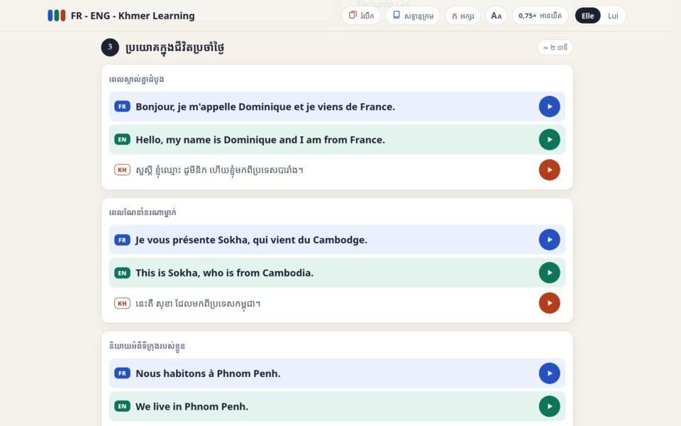
Replaced on 19 Nov 2026Remplacée le 19 nov. 2026ត្រូវបានជំនួស 19 វិច្ឆិកា 2026